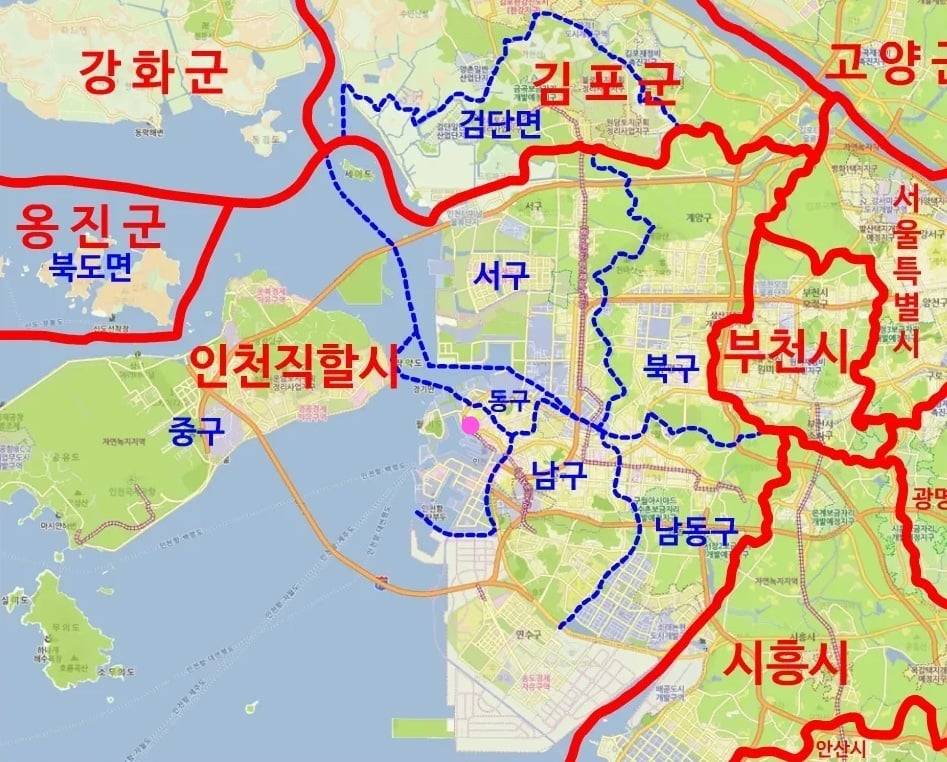
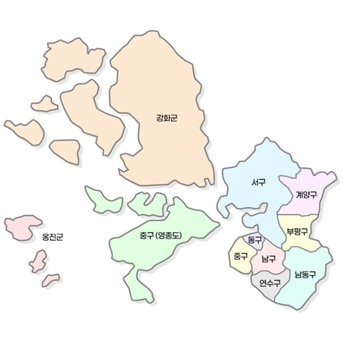
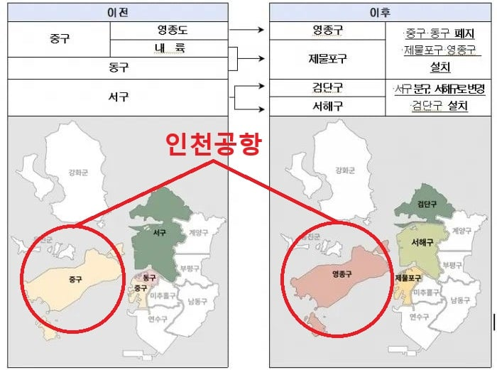

1994년 당시의 인천시 지도
크게 동구 서구 남구 북구로 이루어져 있었다
위치들이 이름에 걸맞지 않게 다소 근본이 없었는데
이것은 일제강점기부터 1980년대까지 인천의 중심이었던
인천역(분홍색 점) 일대를 기준으로 붙인 이름이기 때문이었다

1995년
지방자치제 전면 시행과 동시에
북구를 경인고속도로 기준으로 반으로 갈라서
남쪽 부평구
북쪽 계양구를 만든다
정확히는 북구를 부평구로 개명하고
경인고속도로 북쪽은 계양구로 따로 떼는 형태
이렇게 북구가 없어지게 되었다
동시에 남구에서 문학산 남쪽을 연수구로 따로 떼기도 하였다
2018년
남구를 미추홀구로 개명한다
동서남북 이름을 가진 구를 개명시킨 전국 최초 사례라고 한다
미추홀은 백제시대부터 인천지역을 부르던 오래된 명칭이다
이렇게 남구가 없어지게 된다
2026년
서구를 경인아라뱃길을 기준으로 북쪽 검단구
남쪽 서해구로 나누었으며
동시에 동구와 중구를 합쳐 제물포구로 하고
여기서 기존에 중구에 속하던 영종도(인천공항)를 영종구로 따로 뗀다
지금까지의 동서남북 네이밍이 워낙 근본없기도 했고
지난 30여년 인천에 신공항과 여러 신도시가 개발되어 많은 인구가 유입되는 등
복합적인 원인이 작용한 결과였다

이로써 2026년
인천을 동서남북으로 나누던 행정구역은 완전히 사라지게 되었다
지도보니까 진짜 땅을 엄청 매꿨네ㅋㅋㅋㅋㅋ